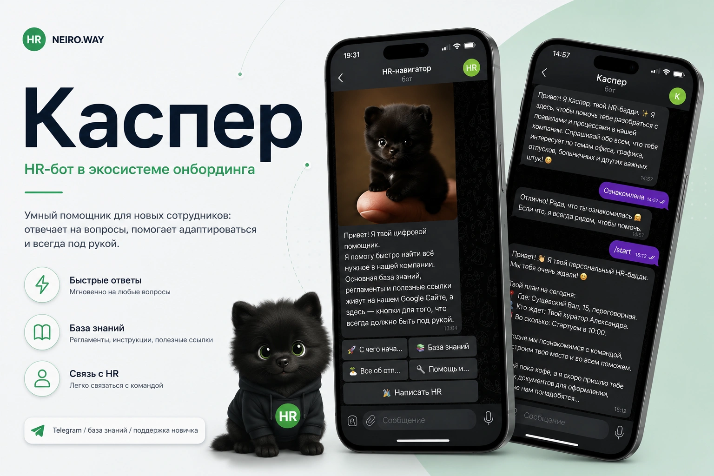
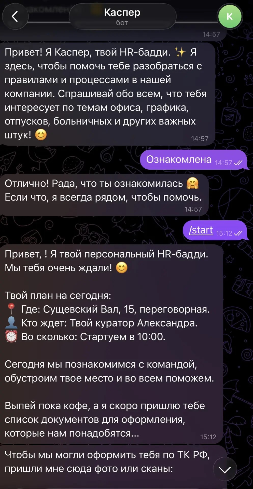
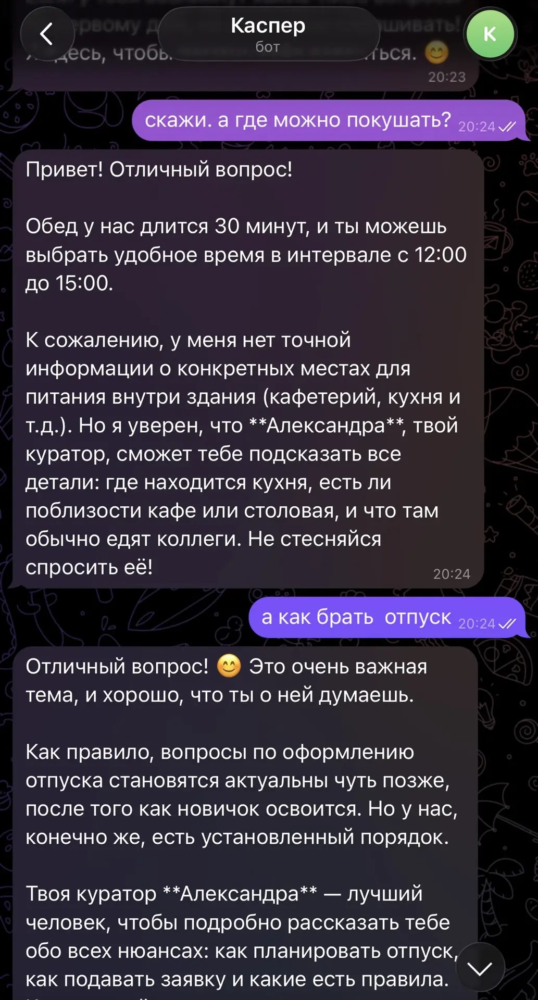

HR-боты
Ответы сотрудникам, сопровождение адаптации и быстрый доступ к базе знаний
[04] АВТОМАТИЗАЦИЯ HR-ПРОЦЕССОВ
Цифровые инструменты для понятной работы
Создаю цифровые инструменты, которые помогают сократить рутину, ускорить работу с документами и сделать внутренние процессы удобнее для сотрудников и HR

[01] ВОЗМОЖНОСТИ
От одного ответа до рабочего сервиса
Ответы сотрудникам, сопровождение адаптации и быстрый доступ к базе знаний
Формирование справок, заявлений и внутренних документов по готовым шаблонам
Регламенты, инструкции и материалы для адаптации в одном месте
Понятные инструменты для рабочих HR-процессов без сложного внедрения
[02] ПРИМЕРЫ
Два инструмента для разных рабочих задач


01 / HR-БОТ
02 / ДОКУМЕНТЫ
[03] ОБСУДИТЬ ЗАДАЧУ
Опишите задачу и то, как она решается сейчас.
Я помогу определить, что можно упростить и какой инструмент для этого подойдёт